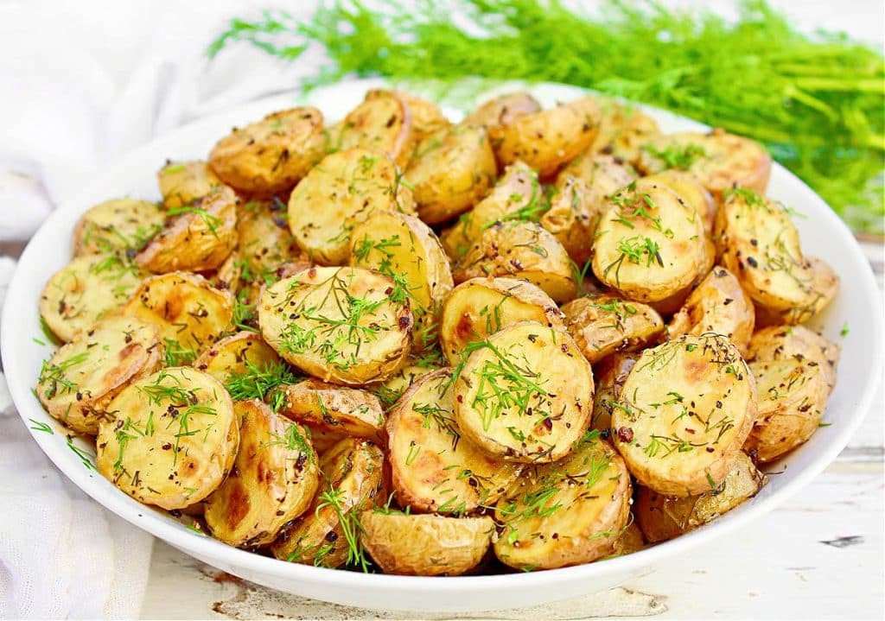
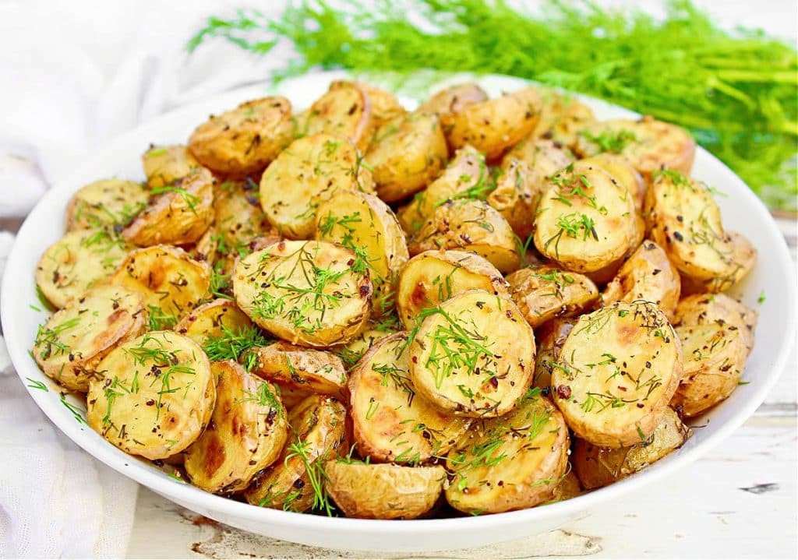

Prosciutto-Wrapped Pork Tenderloin and Oven Baked New Potatoes
Description
Delicious pork dish and easy to prepare, you will
definitely let your friends with no words with this meal.
 

Ingredients
- 1 pound pork tenderloin
- salt and ground black pepper to taste
- 1 bunch fresh sage, leaves removed and stems discarded
- 6 ounces prosciutto
- 1 tbsp olive olil,or more as needed
- 1kg new potato
- 1/4 bunch of dill
- 100g butter
Method
- Preheat the oven to 175C(350 F)
-
Lightly season pork with salt and black pepper. Arange about 6 sage
leaves over tenderloin, then wrap the prosciutto around tenderloin and
sage, overlapping prosciutto slightly, then wrap in plastic wrap and
refigerate to aloow prosciutto to set on the pork tenderloin, up to
10-15 min, then remove the plastic wrap
-
Heat the olive oil in a skillet over medium heat and start to sear the
pork tenderloin until is crispy and lightly browned on all side, it
will take around 10 min. After is nice and sear transfer the
tenderloin on a tray, reserving the oil in the skillet.
-
Bake the tenderloin in the pregeated oven(175C) until the pork is
cooked trough, around 20-30 min. Insert a termometer in the center of
the loin and when if is 68C is ready.
-
Wash the new potatoes and place them in a pot with cold water and boil
them until soft but not over. Remove from water and add salt and olive
oil and mix well until all are coated. Place the potato in a tray and
cook them until they are nice and golden colour. Remove from oven and
place in a pan with the butter, season them with salt and pepper and
cook them for another 5 min on medium heat, then add the chopperd dill
and remove of fire.
-
Heat reserved oil in the skillet over medium heat and fry the remaning
sage leaves until crispy, adding more oil if needed.
-
Slice the tenderloin and serve with crispy sage leaves and new roast
potato